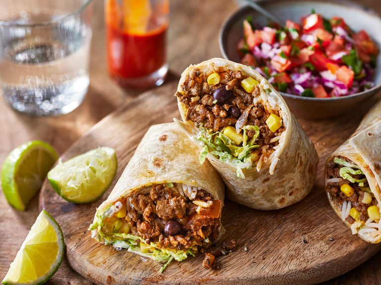

Burritos

Description
Mexican-style Burritos, spicy, filling and heartwarming
A must have in everyones fingerfood repertoir
Ingredients
- 6 corn tortillas
- 300g minced meat
- 1 onion
- 1clove garlic
- 150g white rice
- 4 mushrooms
- 50g creamcheese
- 2 chilis
- 50g black beans
- 50g corn
- spices
- 1 can strained tomatos
- crumbled cheese
Steps
- cut the onino into small squares
- chop garlic
- put water in a pot and bring it to a boil
- chop mushrooms
- chop chili
- wash the rice
- add rice to water and let cook
- heat a pan to high heat and fry the miced meat
- add onions and garlic
- add mushrooms
- add chili
- add strained tomatos
- add spices
- put pan on low heat and let simmer
- dont forget to strain the rice
- put another pan on medium heat
- put some cheese in the pan, cover it with a tortilla and let the cheese melt onto the tortilla
- smear some creamcheese on top of the melted cheese
- assemble all other ingredients and fold your burrito
- now put the burrito back in the pan and give it a nice roasty seal
- Congrats! You are done.